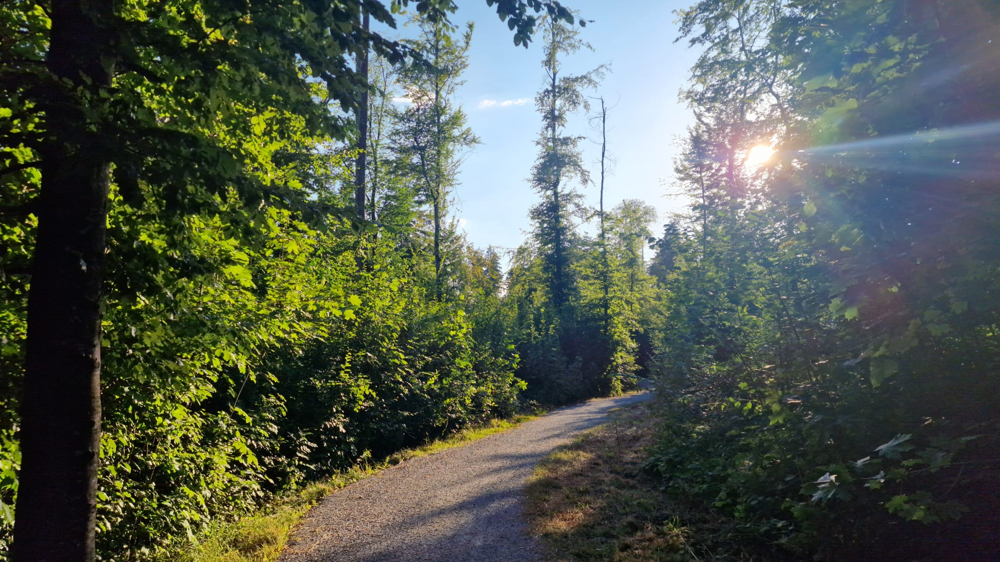
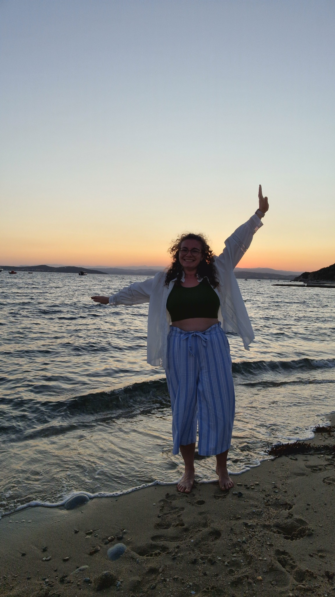

You keep putting yourself last.
Your Way
Remember who you are.Start living like it.
A 4-week guided journey that turns insight into
the way you actually live.
You don’t need another
version of yourself.
You need enough space to hear
the one that is already there.
For years you have been adapting, being responsible, and holding everything together while knowing something needs to change.
Your Way is about remembering who you were before fear, expectations and survival became louder than your own voice.
You might be here if...
You know something has to change, but do not know where to begin.
You have built a life that looks successful, yet does not quite feel like yours.
You are tired of understanding yourself and ready to actually live differently.
Two ways to experience Your Way
Choose the space that feels right for you.
The heart of the journey is the same. What changes is how you want to be held through it.

Group programme · 4 weeks
Your Way Together
A live online group journey for women who want to reconnect with themselves while being witnessed and supported in a small, intimate space.
- 4 live online group sessions
- Small group of up to 10 women
- Reflection, practice and shared support
- WhatsApp support between sessions

Private 1:1 coaching · 4 weeks
Your Way 1:1
A personalised four-week journey with more space for your story, your patterns and the choices that are asking for your attention now.
- 4 private coaching sessions
- Personalised guidance and practices
- Flexible scheduling
- Support between sessions
The journey
Four weeks. A deeper connection to you.
Reconnect with
Your Story
Understand where your beliefs, patterns and inner narratives come from — and how they have shaped your life so far.
Release What
Keeps You Small
Identify the limitations and blockages that hold you back, and gently let them go through reflection, practice and support.
Return Home
to Yourself
Reconnect with your inner compass — your values, purpose and what truly matters — and find your natural rhythm and truth.
Create
What’s Next
Turn what you have discovered into a grounded next chapter, with choices and actions that reflect who you are now.
You don’t have to become someone new.
Sometimes the deepest change is finally trusting the person you already are.
Real women. Real shifts.
What changes when you start choosing yourself.
“Working with Roberta helped me build more trust in myself and my ideas. I can make decisions without feeling guilty, and I have become more detached from needing a particular outcome.”
More self-trust. Less guilt around her choices.
Andra C.“Working with Roberta helped me see how often I put myself last and how rarely I asked what I truly wanted. I now feel more trust in my direction, more calm inside myself, and more curiosity about what comes next.”
More calm, direction and curiosity.
Magda A.“The space Roberta created gave me the courage to be vulnerable with thoughts I found difficult to face. It reminded me that my real self is still there.”
A safer way to meet herself honestly.
Tanita C.“The power of saying no became clearer to me. When I can see that someone else can manage without me, I can say no with much more confidence and far less guilt.”
Clearer boundaries. More confidence saying no.
Nicoleta B.How we work together
Every session combines conversation with embodied practices.
Sometimes we explore your story. Sometimes we work with your nervous system. Sometimes we use visualisation, reflective coaching, somatic awareness or creative exercises.
I follow you, not a script.
Your Way
This is your space to pause, listen, and choose what comes next.
You do not need to have the whole path figured out. We can start with a conversation.
Book a 30-min connection call Let’s explore what feels right for you →